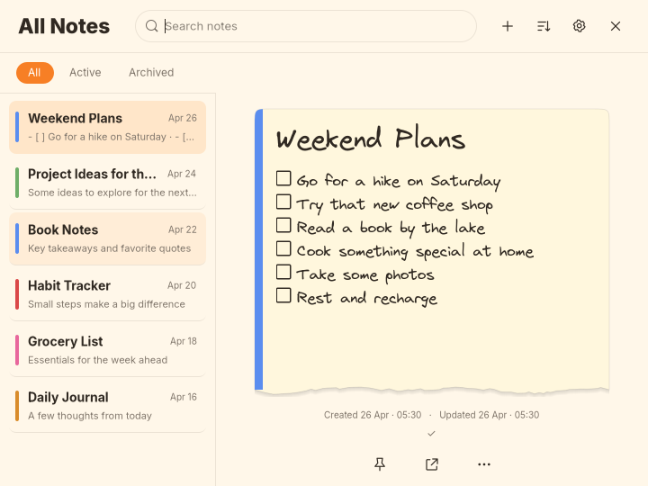
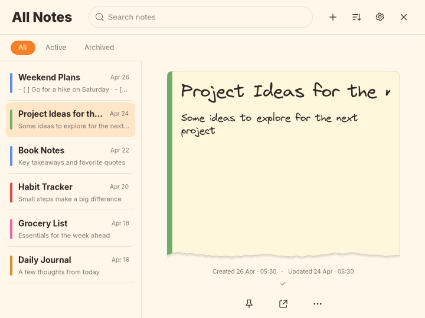
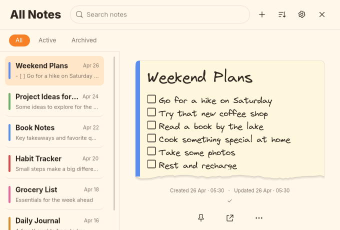

Paper filter spacing correction
Requested spacing correction, verified in Minimal Dark first and then copied to Paper, Playful and Minimal Light. Dark and this correction remain under visual review. No commit or push.
Only filter-band padding and list top padding changed. Actual GTK captures use disposable notes. Click images for original pixels.
| Measurement | Before | After |
|---|
| Filter band | 36px | 44px |
| Pill height | 24px | 24px |
| Above / below pill | 6px / 6px | 10px / 10px |
| Divider to first row | 10px | 8px |
Filter band and first row
All Notes at 720×540
Hover and long titles with dates

Book Notes hovered with Weekend Plans selected
Long Project Ideas title selected, saved date preservedMinimum All Notes window

680×460, wrapping and sidebar scrolling retainedUnchanged individual notes and tools
Verification and review status
GTK asserts the exact spacing, 240px sidebar, selected Weekend Plans content, both main/note sizes and tools preserving note sizes. Formatting, 22 tests, strict Clippy, release build, diff and the GTK shared-editor regression passed. Individual default notes and tools are pixel-identical before/after. Minimum notes differ only in a Dark caret and a Light caret/scrollbar frame. Typography, colors, borders, icons and behavior retain their theme-specific values.
Native pointer/Escape/timer checks were not repeated. All four themes and reference comparison. No commit or push. Stop for visual review.